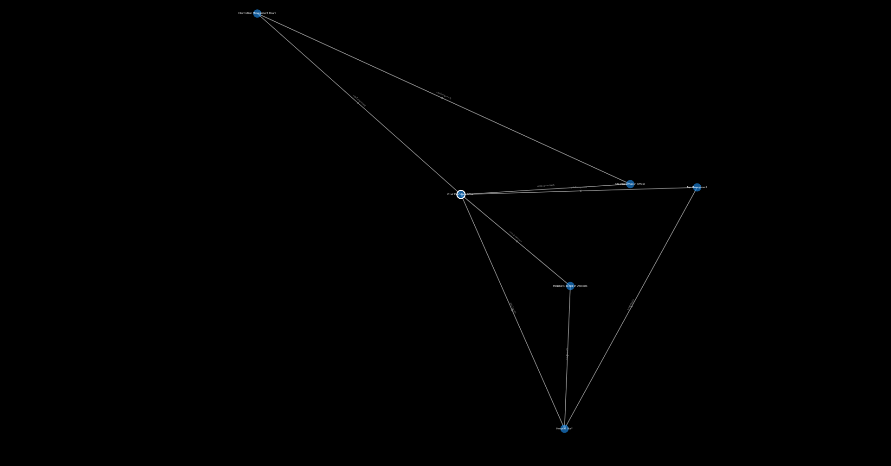
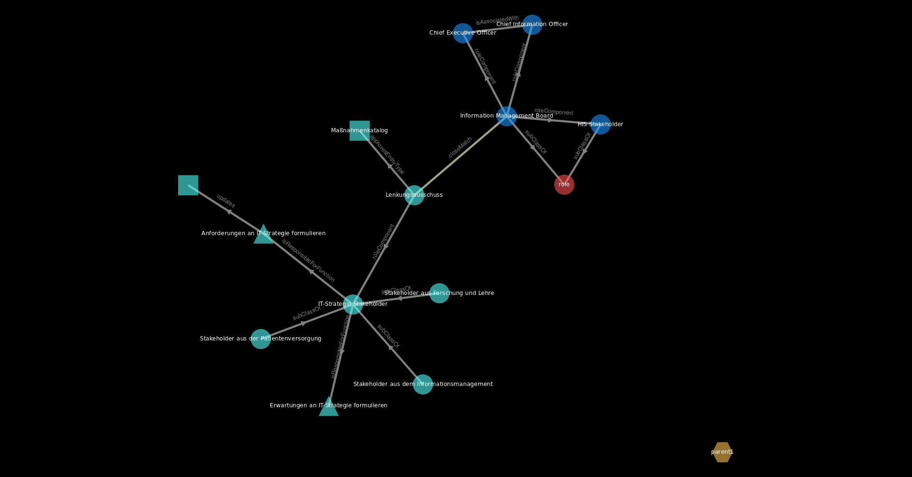

Shows all nodes that are connected via close matches to visible nodes.
Recalculate Layout
Shortkey: Ctrl+Alt+L
Loads the layout new. Can last a while if there are many visible nodes.
Tight Layout
Shortkey: Ctrl+Alt+T
You can use this for a more narrow view.
Compound Layout
Shortkey: Ctrl+Alt+C
This uses Cytoscape's cose (Compond Spring Embedder) layout, which implements a physiscs simulation to lay out graphs. Here it knows combined matches.
Reset View
Shortkey: Ctrl+Alt+R
Resets all the layout operations to get you back to the starting point of the visualization.
Pictures

Original Layout

Tight LayoutCompound Layout